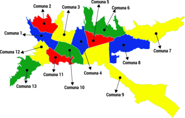

<!-- ======= Services Section ======= -->
<section id="services" class="services">
  <div class="container">

    <div class="section-title">
      <h2>¿Que es el SAR?</h2>
      <p>El SAR ó (Sistema de Atención y Reacción), es un canal de comunicación, que permite a los ciudadanos informar sobre los posibles riesgos que se pueden presentar a raiz de desastres naturales provocados por la ola invernal, con el fin de tener una respuesta oportuna por parte de la entidad competente de acuerdo al tipo de emergencia presentada.
        Es importante tener en cuenta los diferentes tipos de desastres naturales que se pueden presentar durante las temporadas de ola invernal:</p>
    </div>

    <div class="row">
      <div class="col-lg-4 col-md-6 d-flex align-items-stretch">
        <div class="icon-box">
          <div class="icon"><i class="fa-solid fa-mountain-sun"></i></div>
          <h4><a href="">Deslizamiento de tierrra</a></h4>
          <p>Dé por sentado que las pendientes empinadas y las áreas quemadas por los incendios forestales son propensas a los deslizamientos de tierra y a los aludes de barro.</p>
        </div>
      </div>

      <div class="col-lg-4 col-md-6 d-flex align-items-stretch mt-4 mt-md-0">
        <div class="icon-box">
          <div class="icon"><i class="fa-solid fa-house-flood-water"></i></div>
          <h4><a href="">Inundaciones</a></h4>
          <p>Si parece necesario evacuar el lugar, corte el suministro de todos los servicios públicos desde el interruptor principal y cierre la válvula principal del gas.</p>
        </div>
      </div>

      <div class="col-lg-4 col-md-6 d-flex align-items-stretch mt-4 mt-lg-0">
        <div class="icon-box">
          <div class="icon"><i class="fa-solid fa-house-fire"></i></div>
          <h4><a href="">Incendios</a></h4>
          <p>Dirígete a la puerta de salida que esté más lejos del fuego, No abras puertas y ventanas, el fuego se extiende con el aire.</p>
        </div>
      </div>

      <div class="col-lg-4 col-md-6 d-flex align-items-stretch mt-4">
        <div class="icon-box">
          <div class="icon"><i class="fa-solid fa-cloud-bolt"></i></div>
          <h4><a href="">Lluvias torrenciales</a></h4>
          <p>Mantenete alejado de conductores eléctricos como alambrados o verjas. Evitá refugiarte debajo de árboles o estructuras metálicas. Al aire libre, la mejor protección es permanecer en cuclillas con la cabeza gacha y taparse los oídos.</p>
        </div>
      </div>

      <div class="col-lg-4 col-md-6 d-flex align-items-stretch mt-4">
        <div class="icon-box">
          <div class="icon"><i class="fa-solid fa-people-robbery"></i></div>
          <h4><a href="">Robos</a></h4>
          <p>Dirigete a la comisaría más cercana o al puesto más próximo de la guardia civil para denunciar los hechos.</p>
        </div>
      </div>

      <div class="col-lg-4 col-md-6 d-flex align-items-stretch mt-4">
        <div class="icon-box">
          <div class="icon"><i class="fa-solid fa-building-circle-xmark"></i></div>
          <h4><a href="">Colapsos</a></h4>
          <p>No se mueva innecesariamente, conserve su energía, mantenga la calma, respire a través de una tela, ojala húmeda
            Si está atrapado una parte de su cuerpo, y no la puede liberar fácilmente, manténgase lo más inmóvil posible, si tiene hemorragia: haga presión sobre las heridas para detenerla.</p>
        </div>
      </div>

    </div>
    <br><br><br><br><br>
    <div class="text-center">
      
    </div>

    <div class="text-center mt-3">
      <iframe title="hackatonibague2022 - Página 1" width="100%" height="800"
        src="https://app.powerbi.com/view?r=eyJrIjoiYTU2ZjM5Y2QtOGQwZi00ZGIyLWE1MjgtZmE2ZTI5MjJhNGQ3IiwidCI6IjhkMzY4MzZlLTZiNzUtNGRlNi1iYWI5LTVmNGIxNzc1NDI3ZiIsImMiOjR9"
        frameborder="0" allowFullScreen="true"></iframe>
    </div>

  </div>
</section><!-- End Services Section -->
